СТРОИТЕЛЬНЫЕ НОРМЫ И ПРАВИЛА
ПРЕДПРИЯТИЯ, ЗДАНИЯ И СООРУЖЕНИЯ
ПО ХРАНЕНИЮ И ПЕРЕРАБОТКЕ ЗЕРНА
СНиП 2.10.05-85
ГОССТРОЙ СССР
Москва 1988
РАЗРАБОТАНЫ ЦНИИпромзернопроектом Минзага СССР (А.Н. Простосердов - руководитель темы; Е.В. Яковлев, А.А. Попова, И.Д. Мерлян, Б.А. Скориков).
ВНЕСЕНЫ Минзагом СССР.
ПОДГОТОВЛЕНЫ К УТВЕРЖДЕНИЮ Главтехнормированием Госстроя СССР (Н.Н. Светликова).
С введением в действие СНиП 2.10.05-85 «Предприятия, здания и сооружения по хранению и переработке зерна» утрачивает силу «Инструкция по проектированию элеваторов, зерноскладов и других предприятий, зданий и сооружений по обработке и хранению зерна» (СН 261-77).
При пользовании нормативным документом следует учитывать утвержденные изменения строительных норм и правил и государственных стандартов, публикуемые в журнале «Бюллетень строительной техники» Госстроя СССР и информационном указателе «Государственные стандарты СССР» Госстандарта.
|
Госстрой СССР |
Строительные нормы и правила |
СНиП 2.10.05-85 |
|
Предприятия, здания и сооружения по хранению и переработке зерна |
Взамен |
Настоящие нормы распространяются на проектирование элеваторов, зерноскладов, мельниц, комбикормовых заводов и других предприятий, зданий и сооружений по хранению, обработке и переработке зерна1.
___________
1В дальнейшем - предприятия.
1. ОБЩИЕ ПОЛОЖЕНИЯ
1.1. Категории производств по взрывной, взрывопожарной и пожарной опасности следует принимать по нормам технологического проектирования или по перечням производств, устанавливающим эти категории и утвержденным в установленном порядке.
Измененная редакция. Изм. № 1.
1.2. Предприятия следует размещать, как правило, в составе группы предприятий (комбинатов и промузлов) с общими вспомогательными производствами и хозяйствами, инженерными сооружениями и коммуникациями.
Размещение предприятий должно обеспечивать минимальное расстояние перевозок сырья и готовой продукции, в том числе приближение зернохранилищ к местам производства зерна.
Эти предприятия не допускается размещать в санитарно-защитной зоне предприятий, относимых по выделению производственных вредностей в окружающую среду к I и II классам в соответствии с требованиями СН 245-71.
Элеваторы должны располагаться на расстоянии не менее 200 м от предприятий по хранению и переработке ядовитых жидкостей и веществ. Не допускается располагать элеваторы вплотную к указанным предприятиям, к предприятиям по хранению и переработке легковоспламеняющихся горючих жидкостей, а также ниже по рельефу местности.
1.4. При проектировании предприятий должно быть обеспечено создание единого архитектурного ансамбля в увязке с архитектурой прилегающих предприятий и населенного пункта.
Измененная редакция. Изм. № 1.
1.5. При проектировании предприятий в сейсмических районах надлежит соблюдать требования СНиП II-7-81.
|
Внесены |
Утверждены |
Срок введения в действие |
1.6. Основные здания и сооружения предприятий следует проектировать II класса по степени ответственности и II степени огнестойкости.
Здания зерноскладов и отдельные сооружения для приема, сушки и отпуска зерновых продуктов и сырья, а также транспортерные галереи зерноскладов допускается проектировать III класса по степени ответственности и III, IV и V степеней огнестойкости. При этом помещение огневых топок зерносушилок должно отделяться от других смежных помещений глухими стенами и перекрытиями (покрытиями) с пределом огнестойкости соответственно не менее 2 и 1 ч, с нулевым пределом распространения огня и иметь непосредственный выход наружу. Бункера для отходов и пыли должны проектироваться с проездами под ними из несгораемых материалов.
Примечание. К основным зданиям и сооружениям относятся производственные корпуса мельнично-крупяных и комбикормовых предприятий, рабочие здания элеваторов, корпуса для хранения зерна, сырья и готовой продукции с транспортерными галереями, включая отдельно стоящие силосы и силосные корпуса.
1.7. Обеспечение доступности зданий и помещений, где организуются рабочие места для инвалидов, следует выполнять в соответствии с требованиями, изложенными в СНиП 2.09.02-85*, санитарно-бытовое обслуживание работающих инвалидов - в соответствии со СНиП 2.09.04-85*.
Квота рабочих мест для инвалидов, виды и группы инвалидности работников, для которых могут быть организованы рабочие места в зданиях и помещениях для хранения и переработки зерна, устанавливаются в задании на проектирование с участием в его составлении территориальных органов социальной защиты населения в соответствии с правилами, установленными в РДС 35-201-99 Госстроя России и Минтруда России «Порядок реализации требований доступности для инвалидов к объектам социальной инфраструктуры».
Пункт 1.7 введен дополнительно. Изм. № 1.
2. ГЕНЕРАЛЬНЫЕ ПЛАНЫ
2.1. Генеральные планы предприятий, строящихся в городах и поселках, следует разрабатывать в соответствии с требованиями СНиП II-89-80*.
Измененная редакция. Изм. № 1.
2.2. Допускается блокировать здания и сооружения II степени огнестойкости (в том числе с устройством транспортерных галерей и других технологических коммуникаций): рабочие здания с силосными корпусами, отдельными силосами и приемно-отпускными сооружениями; производственные корпуса мельниц, крупозаводов и комбикормовых заводов с приемно-отпускными сооружениями, корпусами сырья и готовой продукции. При этом расстояния между ними не нормируются. Общая длина указанных зданий и сооружений, расположенных в линию, не должна превышать 400 м, суммарная площадь застройки соединенных зданий и сооружений не превышать 10 000 м2.
2.3. При проектировании генеральных планов следует, как правило, предусматривать блокировку зданий и сооружений подсобно-вспомогательного назначения.
2.4. При наличии железнодорожных путей, проходящих вдоль линии зданий и сооружений, допускается устройство подъездов к ним с одной продольной и одной торцевой (для крайнего здания) сторон.
Железнодорожные пути в пределах погрузочно-разгрузочных фронтов следует включать в площадь застройки, рассматривая их как погрузочно-разгрузочные площадки.
2.5. Уровень полов первых этажей производственных зданий, подсилосных этажей силосных корпусов, как правило, должен быть выше планировочной отметки земли примыкающих к зданию участков не менее чем на 15 см, горизонтальных полов зерноскладов - на 20 см.
При технологической необходимости допускается расположение отдельных помещений в сооружениях для разгрузки зерна и сырья ниже планировочной отметки, а также открытых приямков на первом этаже производственных зданий; при этом заглубление всех подземных помещений должно быть минимальным с учетом возможностей технологического процесса.
Уровень пола первого этажа складов тарных грузов следует принимать, как правило, на уровне отгрузочных платформ (рамп), которые необходимо проектировать в соответствии со СНиП 2.11.01-85*.
Измененная редакция. Изм. № 1.
2.6. Между торцами зданий зерноскладов допускается размещать сооружения для приема, сушки, очистки и отпуска зерновых продуктов, а также здания комбикормовых заводов, крупоцехов и мельниц производительностью до 50 т/сут.
Расстояния между зерноскладами и указанными зданиями и сооружениями не нормируются при условии, если:
торцевые стены зерноскладов выполнены как противопожарные;
расстояния между поперечными проездами линии зерноскладов (шириной не менее 4 м) не более 400 м;
здания и сооружения II степени огнестойкости имеют со стороны зерноскладов глухие стены или стены с проемами с пределом огнестойкости стен и их заполнения не менее 1,2 ч.
2.7. Санитарные разрывы между складами готовой продукции мельнично-крупяных предприятий и другими промышленными предприятиями следует принимать равными разрывам между этими предприятиями и селитебной зоной, между указанными складами и комбикормовыми предприятиями, - как правило, не менее 30 м.
2.8. Площадь асфальтированных покрытий на территории предприятия должна быть минимальной, определяемой технологическими требованиями. Остальная часть территории должна быть благоустроена и озеленена.
3. ОБЪЕМНО-ПЛАНИРОВОЧНЫЕ И КОНСТРУКТИВНЫЕ РЕШЕНИЯ
3.1. Основные здания и сооружения следует, как правило, блокировать между собой (с учетом требований п. 2.2, а также с обеспечением доступа с одной стороны в верхнюю часть зданий и сооружений пожарных и автомеханических лестниц).
3.2. Для производственных и других помещений следует предусматривать освещение согласно требованиям СНиП II-4-79. Допускается также предусматривать совмещенное освещение, а в отдельных случаях (например, для помещений внутри здания) - только искусственное. При проектировании естественного и искусственного освещения следует принимать разряды зрительных работ согласно табл. 6.
3.3. Наружные ограждающие конструкции помещений с производствами категории Б, а также производственных помещений рабочих зданий элеваторов, зерноочистительных отделении мельниц, надсилосных и подсилосных этажей силосных корпусов следует, как правило, проектировать из легкосбрасываемых конструкций, площадь которых определяется расчетом. При отсутствии расчетных данных площадь легкосбрасываемых конструкций следует принимать не менее 0,03 м2 на 1 м3 взрывоопасного помещения. Легкосбрасываемые конструкции должны быть равномерно распределены по площади наружных ограждений. Торцевые стены помещений с отношением сторон свыше 3:1 должны иметь легкосбрасываемые конструкции.
Пункт 3.4 Исключен Изм. № 1.
ПРОИЗВОДСТВЕННЫЕ ЗДАНИЯ
3.5. Производственные здания (корпуса) зерноперерабатывающих предприятий (мельниц, крупозаводов, комбикормовых заводов) следует проектировать, как правило, многоэтажными каркасными с сетками колонн 9´6 или 6´6 м, с высотой этажей 4,8 и 6 м (в зависимости от технологии производства).
Рабочие здания элеваторов следует проектировать многоэтажными каркасными, а также в виде силосного сооружения из сблокированных силосов с производственными помещениями, расположенными в силосной части (в том числе над и под силосами) , с пролетами 6 м и высотой этажей, кратной 1,2 м, и в надстройке каркасной конструкции (с сеткой колонн, как правило, 6´6 м). Стены силосов, примыкающие к производственным помещениям, должны иметь предел огнестойкости не менее 2 ч.
Число этажей зданий с производствами категории Б допускается до восьми включительно, рабочих зданий элеваторов - не ограничивается при общей высоте до 60 м. Допускается увеличение высоты рабочих зданий элеваторов при согласовании с органами пожарного надзора в установленном порядке.
3.5.1. Производственные корпуса комбикормовых предприятий допускается проектировать в виде силосного сооружения со встроенными производственными помещениями.
3.5.2. В каркасные здания допускается встраивать стальные силосы (бункера), а также железобетонные силосы с сеткой разбивочных осей, проходящих через их центры, 3´3 м, расположенные по всей ширине здания, при этом сетку подсилосных колонн допускается принимать равной 6´3 м. Вместимость силосов должна быть минимально возможной в зависимости от условий технологического процесса и не должна превышать 200 м3.
3.5.3. Допускается при соответствующем обосновании проектировать здания с пролетами, равными 12 м.
3.5.4. Допускается рабочее здание проектировать круглым в плане (диаметром 12 м и более), в которое могут быть встроены зерновые силосы.
3.6. В производственных зданиях следует предусматривать лестницу из сборного железобетона и пассажирский лифт (при постоянно работающих на этажах, расположенных выше 15 м от уровня входа в здание). Пассажирский лифт также следует предусматривать при организации рабочих мест для инвалидов на этажах, расположенных выше 6 м от уровня входа в здание, если это установлено в задании на проектирование Лестничная клетка должна быть незадымляемой (для рабочих зданий, как правило, с поэтажными входами через наружную воздушную зону по балконам или лоджиям).
Размеры лестниц следует принимать по нормам проектирования производственных зданий. Для эвакуации не более 50 чел. допускается принимать ширину лестничных маршей 0,9 м и уклон 1:1,5.
Измененная редакция. Изм. № 1.
3.7. При количестве постоянно работающих в рабочем здании (на этажах выше первого) и соединенных с ним силосных корпусах, а также в корпусах сырья и готовой продукции не более 10 чел. в наиболее многочисленную смену и при отсутствии рабочих мест для инвалидов допускается: уклон маршей увеличивать до 1:1; для лестничных клеток предусматривать лестницы из несгораемых конструкций с пределом огнестойкости не менее 0,25 ч; наружные открытые стальные лестницы, используемые для эвакуации, проектировать с уклоном до 1,7:1.
Измененная редакция. Изм. № 1.
3.7.1. Допускается ширину маршей открытых лестниц, ведущих на площадки, антресоли и в приямки, уменьшать до 0,7 м, уклон маршей - увеличивать до 1,5:1, при нерегулярном использовании лестницы - до 2:1; для осмотра оборудования при высоте подъема до 10 м предусматривать вертикальные одномаршевые лестницы шириной до 0,6 м.
Лестницы, ведущие на площадки и антресоли, при отсутствии на них постоянно работающих допускается проектировать винтовыми и с забежными ступенями.
3.7.2. Лестничную клетку допускается проектировать снаружи здания.
3.8. В зданиях и сооружениях, где на этажах выше первого нет работающих постоянно, допускается предусматривать один эвакуационный выход по незадымляемой лестничной клетке или по открытой наружной не защищенной от огня стальной лестнице с маршами шириной не менее 0,7 м и с уклоном не более 1:1.
3.9. Расстояние от наиболее удаленного рабочего места (кроме рабочего места инвалида) до ближайшего эвакуационного выхода из помещений категории Б допускается увеличивать на 50 % по сравнению с предусмотренным СНиП 2.09.02-85, если площадь не занятого оборудованием пола в помещении на одного работающего в наиболее многочисленной смене составляет 75 м2 и более.
Измененная редакция. Изм. № 1.
3.10. В рабочих зданиях элеваторов допускается проектировать лестничные клетки с выходами через тамбур-шлюзы, а также с подпором воздуха во время пожара 20 Па (2 кгс/м2) при условии устройства в наружных стенах лестничной клетки легкосбрасываемых конструкций площадью не менее 0,06 м2 на 1 м3 ее объема.
Указанные лестничные клетки со встроенными пассажирскими лифтами разрешается не разделять по высоте перегородками.
3.11. Лифт допускается не предусматривать в производственном здании, соединенном поэтажно с другим зданием, которое оборудовано пассажирским лифтом, при условии, что наибольшее расстояние от рабочего места (кроме рабочего места инвалида) до лифта составляет не более 150 м, а при отсутствии работающих постоянно - не более 200 м.
Грузовой лифт в производственных зданиях следует предусматривать при наличии требований технологии производства, при этом выходы в помещения с категориями производства Б и В должны быть устроены через тамбур-шлюзы с подпором воздуха во время пожара 20 Па (2 кгс/м2). Размеры тамбур-шлюза следует назначать с учетом габаритов перевозимого оборудования.
Измененная редакция. Изм. № 1.
3.12. В производственных зданиях зерноперерабатывающих предприятий следует, как правило, выделять отдельные помещения, располагаемые по всем этажам одни над другими, для размещения электротехнического оборудования и прокладки кабелей.
3.13. Полы, перекрытия, стены и перегородки производственных зданий следует проектировать беспустотными.
Примечание. В помещениях диспетчерской допускается применение съемных полов.
3.14. Внутренние поверхности стен, потолков, несущих конструкций, дверей, полов помещений, а также внутренние поверхности стен силосов и бункеров, встроенных в производственные здания, должны быть, как правило, без выступов, впадин, поясков и позволять легко производить их очистку. Наклоны стенок, днищ и воронок бункеров и силосов принимаются по нормам технологического проектирования. Допускаются применение ребристых плит перекрытий и использование в качестве опалубки железобетонных монолитных перекрытий стальных профилированных листов, служащих и рабочей арматурой; при этом стальные листы должны иметь огнезащиту, обеспечивающую предел огнестойкости перекрытий не менее 0,75 ч.
3.15. Заполнение проемов дверей, ворот и окон следует предусматривать с уплотняющими прокладками в притворах и фальцах.
Соединение рабочих зданий (в том числе и сблокированных) с зернохранилищами (силосными корпусами и зерноскладами) следует, как правило, предусматривать через транспортерные галереи с перегородками, отделяющими помещения зернохранилищ от рабочих зданий. Проемы в этих перегородках для прохода людей должны иметь уплотнения в притворах дверей, имеющих предел огнестойкости не менее 0,6 ч, сами перегородки должны быть из несгораемых материалов с пределом огнестойкости не менее 0,75 ч. Все сопряжения ограждающих конструкций, деформационные швы рабочих зданий, сооружений и помещений должны быть плотными, без щелей и зазоров.
Примечание. Проемы для пропуска конвейеров должны быть защищены автоматическими противопожарными клапанами или щитами, разрабатываемыми в технологической части проекта.
3.16. В многоэтажных зданиях наружные стальные лестницы, предназначенные для эвакуации людей, следует, как правило, размещать у глухих участков наружных стен. Допускается располагать эти лестницы против остекленных проемов, при этом со стороны остекления лестницы должны иметь сплошное ограждение из несгораемых материалов, а выходы с этажей на лестницы располагаться вне ограждения.
3.17. В каждом помещении с естественным освещением следует предусматривать для проветривания в окнах не менее двух открывающихся (для этажей выше первого - внутрь здания) створок или форточек с ручным открыванием площадью не менее 1 м2 каждая. Суммарная площадь створок или форточек должна быть не менее 0,2 % площади помещений, для надсилосных этажей - 0,3 %.
3.18. Ограждения расположенных внутри производственных зданий площадок, антресолей, приямков, на которых размещено технологическое оборудование, следует проектировать стальными решетчатыми высотой 0,9 м, при этом ограждения должны быть сплошными на высоту не менее 150 мм от пола.
По периметру наружных стен рабочих и других зданий и сооружений высотой до верха карниза или парапета свыше 10 м следует предусматривать на кровле решетчатые ограждения высотой не менее 0,6 м из несгораемых материалов.
3.19. Типы покрытий полов следует назначать в соответствии с требованиями СНиП II-В.8-71 и с учетом требований технологии производства, при этом в помещениях с пыльными производствами следует предусматривать типы покрытия полов, обеспечивающие легкость их очистки и малое пылевыделение.
3.20. На первом этаже производственных зданий с производствами категории Б допускается устраивать открытые приямки для размещения технологического оборудования, при этом глубина приямков не должна превышать 1,5 м, а общая их площадь - 30 % площади помещения.
3.21. Для производственных и рабочих зданий участки перекрытий с большим числом технологических отверстий, как правило, следует проектировать сборно-монолитными со сборными плитами с полкой толщиной до 30 мм и монолитным слоем железобетона сверху, а также сборными (при соответствующем обосновании) с высверливанием отверстий.
Все отверстия в перекрытиях после установки оборудования должны быть, как правило, заделаны бетоном. При технологической необходимости (пропуске матерчатых рукавов и др.) допускается устройство незаделанных отверстий диаметром не более 200 мм и общей площадью до 5 % площади этажа. При этом общая суммарная площадь этажей, сообщающихся через незаделанные отверстия, не должна превышать 8000 м2.
СИЛОСЫ И СИЛОСНЫЕ КОРПУСА
3.22. При проектировании отдельно стоящих силосов и силосных корпусов надлежит принимать:
сетки разбивочных осей, проходящих через центры железобетонных сблокированных в силосные корпуса силосов, - 3´3, 6´6, 9´9 и 12´12 м;
наружные диаметры круглых отдельно стоящих силосов - 6, 9, 12, 18 и 24 м;
высоту стен силосов, подсилосных и надсилосных этажей - кратной 0,6 м, при этом следует принимать высоту подсилосных этажей минимально возможной, высоту стен силосов - максимальной с учетом технологических требований и условий площадки (несущей способности грунтов основания, сейсмичности и др.).
В силосных корпусах для хранения сырья и готовой продукции мельнично-крупяных и комбикормовых предприятий с двумя подсилосными этажами и более допускается принимать каркас по типу производственных зданий с сеткой колонн 6´3 м.
Оптимальное соотношение силосов разных размеров должно приниматься из условия полного использования их вместимости, при этом применение силосов больших диаметров должно быть максимальным.
Силосы мельнично-крупяных и комбикормовых предприятий, как правило, следует принимать с сеткой разбивочных осей 3´3 м. Допускается эти силосы разделять на части дополнительными внутренними стенами.
Объем каждого из силосов, сблокированных в силосный корпус, или группы силосов, объединенных перепускными отверстиями, не должен превышать 2400 м3.
Примечания: 1. Под силосом понимается
вертикальная цилиндрическая или призматическая емкость, предназначенная для
хранения сыпучего материала. При этом высота от верха воронки или набетонки
(забутки) до низа надсилосного перекрытия (черт. 1) должна быть, как правило,
более 1,5 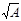
2. В силосных корпусах с несколькими подсилосными этажами допускается располагать силосы на части корпуса.
Возможно увеличение длины корпуса и указанных отношений при соответствующем обосновании.
3.24. в качестве эвакуационных выходов из надсилосных этажей силосных корпусов могут быть использованы транспортерные галереи, ведущие к другим зданиям и сооружениям, оборудованным лестничными клетками и наружными эвакуационными лестницами.
3.25. В силосных корпусах, объединенных в одно сооружение или соединенных между собой и с рабочими зданиями элеваторов, а также с производственными зданиями по переработке зерновых продуктов галереями, лестничные клетки могут не устраиваться. При этом в рабочем здании элеваторов и в силосных корпусах следует предусматривать наружные эвакуационные открытые стальные лестницы, которые в силосных корпусах должны доходить до крыши надсилосного этажа.
Расстояние от наиболее удаленной части помещения надсилосного этажа до ближайшего выхода на наружную лестницу или лестничную клетку должно быть не более 75 м.
Примечание. В силосных корпусах, поэтажно связанных с производственными зданиями, допускается предусматривать эвакуационные выходы по наружным переходным балконам, ведущим к лестницам этих зданий, или по наружным лестницам, которые на высоте свыше 20 м должны быть, как правило, закрыты сплошным ограждением на высоту 1,8 м от ступеней
Черт. 1. Разрезы силосов
а - с плоским днищем и забуткой; б - с плоским днищем, стальной воронкой и забуткой; в - с воронкой без забутки; h - высота стен силосов, h1 - высота верхней зоны; h2 - высота второй зоны; h3 - высота нижней зоны; hmt - высота средней зоны; d - внутренний диаметр силоса
3.26. В проектах должна предусматриваться защита стыков сборных элементов стен силосов от атмосферных осадков (конструкцией самого стыка или с помощью герметизирующих защитных покрытий).
3.27. Сборные железобетонные стены силосов, а также монолитные отдельно стоящие силосы диаметром свыше 12 м, как правило, следует предусматривать из предварительно напряженных конструкций.
3.28. При проектировании сборных железобетонных квадратных силосов должны, как правило, применяться объемные блоки. При этом следует стремиться к объединению и укрупнению силосов (с учетом технологии хранения сыпучего материала), например, путем монтажа стен силосов с пропуском отдельных элементов и созданием укрупненных силосов с решетчатыми внутренними стенами.
3.29. Отделка поверхности внутренних стен силосов должна способствовать лучшему истечению сыпучего материала. Для зерна и других легкосыпучих материалов допускается гладкая железобетонная поверхность стен без дополнительной отделки или затертая цементным раствором, а стальных силосах - окрашенная натуральной олифой. Для муки, мучнистых и других трудносыпучих материалов для отделки всей поверхности стен или их нижней части, а также выпускных воронок следует применять составы, разрешенные Минздравом СССР, с фактурой, соответствующей требованиям к поверхности, подготовленной под высококачественную окраску, по ГОСТ 22753-77.
3.30. Наружная окраска стен силосов должна быть светлых тонов. Материалы для окраски должны подбираться с учетом агрессивного воздействия наружной среды, для железобетонных силосов, кроме того, с применением гидрофобных добавок.
3.31. Наружные стены силосов для хранения муки и отрубей в целях предотвращения конденсации влаги на внутренней поверхности следует изолировать от внешней среды, как правило, устройством коридоров с размещением силосов внутри здания. Силосы для зерна, встроенные в здания мельниц, а также силосы для муки в III и IV климатических районах допускается проектировать с беспустотной теплоизоляцией наружных стен.
3.32. Толщину стен сборных железобетонных силосов при сплошных гладких стенах следует предусматривать не менее 80 мм, при стенах с наружными ребрами (шириной не мене 60 мм) - не менее 40 мм, при стенах, служащих ограждением лестничных клеток, - не менее 100 мм.
3.33. Силосные корпуса, отдельно стоящие силосы, надсилосные галереи, надстройки (выше уровня надсилосного перекрытия) для размещения в них норий и автоматических весов, транспортерные галереи (для зданий и сооружений II степени огнестойкости) допускается проектировать, в соответствии с требованиями ТП 101-81, из стальных конструкций с пределом огнестойкости не менее 0,25 ч и нулевым пределом распространения огня.
Примечание. В стальных колоннах и перекрытиях надстроек, кроме двух верхних этажей, а также в несущих конструкциях подсилосных этажей (колоннах и балках под стены силосов) должна быть предусмотрена огнезащита, обеспечивающая предел огнестойкости этих конструкций не менее 0,75 ч.
3.34. При проектировании силосов из монолитного железобетона, возводимых в скользящей опалубке, толщину стен следует принимать не менее 150 мм, ширину балок - не менее 200 мм, армирование предусматривать двустороннее, нахлестку горизонтальной арматуры в стыках без сварки - с длиной перепуска не менее 60 диаметров.
3.35. При проектировании силосов следует предусматривать устройства по снижению горизонтального давления зерновых продуктов при их выпуске (например, в круглых силосах с помощью установки разгрузочных центральных перфорированных труб или путем выпуска зерновых продуктов из силосов через отверстия в стенах межсилосных емкостей - звездочек), а также объединять (с учетом технологии хранения) квадратные силосы в группы для упрощения загрузки и выгрузки (как правило, через внутренний силос) путем устройства отверстий в стенах смежных силосов (черт. 2). При объединении силосов использование их внутреннего объема должно быть максимальным.
а) I-I б) II-II в) III-III
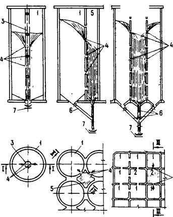
Черт. 2. Выпуск сыпучего материала из силоса
а - через разгрузочную трубу; б - через звездочку; в - через внутренний силос; 1 - силос пассивный, 2 - силос активный; 3 - разгрузочная труба; 4 - отверстия в стенах силосов и в разгрузочной трубе; 5 - звездочка; 6 - самотечная труба; 7 - конвейер
СКЛАДСКИЕ ЗДАНИЯ
3.37. Здания зерноскладов следует проектировать одноэтажными, без перепадов высот, с унифицированными объемно-планировочными параметрами, м: пролеты - 6; 12; шаг опор - 6 и высота помещений у стен - 3,6.
Примечания: 1. В зерноскладах из местных материалов с деревянным внутренним каркасом допускается принимать пролеты между опорами менее 6 м, а также изменять высоту стен (увеличивать или уменьшать) при условии выполнения требований эксплуатации и соответствующем обосновании.
2. Допускается проектировать однопролетные сводчатые зерносклады с пролетами 18 и 24 м.
3. Расстояние от верха насыпи зерна до низа несущих конструкций покрытия следует принимать не менее 0,5 м.
Измененная редакция. Изм. № 1.
3.38. Зерносклады допускается проектировать с наклонными полами (с уклоном не менее 1:1,4), если гидрогеологические условия площадки строительства допускают устройство транспортерных тоннелей и полов здания без устройства гидроизоляции и если при этом имеются соответствующие условия для технологического процесса.
3.39. Площадь зданий зерноскладов между противопожарными стенами следует принимать в соответствии с требованиями СНиП 2.09.02-85*, но не более 3000 м2.
Измененная редакция. Изм. № 1.
3.40. Ворота в зерноскладах следует проектировать распашными. В зерноскладах с наклонными полами с полной выгрузкой зерна самотеком, а также в зерноскладах, оборудованных аэрожелобами, следует предусматривать двое ворот, располагаемых в разных концах здания. При горизонтальных полах число ворот определяется в технологической части проекта, но предусматривается не менее двух.
3.41. Зерносклады следует проектировать, как правило, без световых проемов.
3.42. Зерносклады с наклонными полами следует проектировать таким образом, чтобы исключить возможность выхода рабочих на насыпь зерна при его выгрузке из склада (устраивать боковое ограждение галереи на всю ее высоту до крыши, блокировку электродвигателей конвейеров, расположенных в тоннелях, с механизмами открывания дверей и др.).
3.43. В зерноскладах с горизонтальными полами над проемами в перекрытии тоннелей для выпуска зерна следует предусматривать установку стационарных решетчатых колонок круглого сечения.
3.44. При проектировании зданий зерноскладов следует применять сборные железобетонные и деревянные конструкции и местные строительные материалы.
3.45. Покрытие зерноскладов следует, как правило, проектировать с уклоном 1:2,1, соответствующим углу естественного откоса зерна, из волнистых асбестоцементных листов. Для повышения водонепроницаемости допускается при соответствующем обосновании предусматривать укладку асбестоцементных листов по сплошному дощатому настилу с прокладкой слоя рулонного кровельного материала.
Примечание. Для III и IV климатических районов в соответствии со СНиП 2.01.01-82 покрытие зерноскладов допускается проектировать из асбестоцементных волнистых листов унифицированного или усиленного профиля с уплотнением продольных и поперечных соединений без устройства настила.
3.46. Стены, покрытия и полы зданий зерноскладов должны быть беспустотными. Внутренние поверхности стен зерноскладов должны быть гладкими (без выступов, впадин, горизонтальных ребер, поясков и щелей), доступными для очистки и дезинсекции. Материалы строительных конструкций зданий, а также вещества и составы, применяемые для отделки и защиты конструкций от гниения и возгорания, должны быть безвредными для хранимого зерна или семян и входить в список материалов, разрешенных Минздравом СССР.
3.47. Для внутренних транспортерных галерей зерноскладов III степени огнестойкости и ниже допускается применять деревянные конструкции, защищенные от возгорания.
3.48. Вынос кровли (за наружную поверхность стен) для зерноскладов должен быть не менее 0,7 м.
3.49. Полы в складских зданиях следует проектировать, как правило, асфальтобетонными с толщиной покрытия 25 мм в зерноскладах и 50 мм в складах тарных грузов. В покрытиях полов не допускается применение дегтей и дегтевых мастик.
3.50. Проекты зерноскладов должны содержать указания о нанесении на стены ярких линий и надписей, ограничивающих предельную высоту зерновой насыпи.
3.51. Склады готовой продукции в виде тарных грузов (мешков и пакетов с мукой, комбикормами) следует проектировать одноэтажными или многоэтажными (не более шести этажей). Склады сырья комбикормовых предприятий, как правило, следует проектировать одноэтажными.
Для одноэтажных складов принимают сетку колонн 9´6, 12´6 и 18´6 м, высоту стен 6 и 7,2 м. Для многоэтажных складов следует принимать сетку колонн 6´6 м и высоту этажей 4,8 м, для верхнего этажа - также сетку колонн 12´6 и 18´6 м.
3.52. В здании склада тарных грузов на первом этаже у торца допускается располагать зарядную станцию для аккумуляторных погрузчиков. Число одновременно заряжаемых батарей при этом должно быть не более пяти.
Ограждающие конструкции зарядного помещения должны иметь предел огнестойкости не менее 0,75 ч и нулевой предел распространения огня.
Зарядная станция должна быть отделена от остальных складских помещений противопожарными стеками и перекрытиями и иметь обособленный выход.
3.53. Внутри многоэтажных зданий складов тарных грузов следует предусматривать (при наличии технологических требований) грузовой лифт с устройством тамбур-шлюзов перед выездами.
3.54. Оконные проемы складов готовой продукции в виде тарных грузов с производством категории В следует, как правило, заполнять стеклоблоками, устраивая в части проемов открывающиеся оконные фрамуги площадью не менее 1,2 м2 с механизированным открыванием для дымоудаления. Суммарная площадь проемов принимается не менее 0,3 % площади пола склада.
3.55. Наружные стены складов тарных грузов следует предусматривать, как правило, сборными из железобетонных панелей.
3.56. Перекрытия складов тарных грузов следует проектировать, как правило, сборно-монолитными с устройством монолитного железобетонного слоя поверх сборных железобетонных плит. Участки перекрытий, на которые исключено воздействие нагрузок от колес погрузчиков, допускается проектировать сборными железобетонными.
ПРОЧИЕ ЗДАНИЯ И СООРУЖЕНИЯ
3.57. Приемные сооружения для разгрузки сыпучих материалов с железнодорожного и автомобильного транспорта при производствах категории Б по взрывопожарной опасности допускается проектировать с бункерами, размещаемыми в заглубленных помещениях с открытыми проемами площадью не менее 0,03 м2 на 1 м3 объема помещения.
Как правило, не допускается соединять тоннелями производственные здания с сооружениями для разгрузки зерна и сырья.
3.58. Размеры транспортерных галерей и тоннелей и выходы из них должны приниматься в соответствии с требованиями СНиП II-91-77 и технологии производства.
При длине тоннеля свыше 120 м допускается предусматривать промежуточные выходы не реже чем через 100 м, ведущие в каналы высотой 1,5 и шириной 0,7 м, заканчивающиеся вне здания зерносклада или силоса колодцем с люком, оборудованным металлической лестницей или скобами для выхода.
Лестницы для галерей допускается выполнять открытыми стальными с уклоном не более 1,7:1 и шириной не менее 0,7 м. При отсутствии работающих постоянно допускается лестницу высотой не более 15 м с одного конца галереи предусматривать с уклоном 6:1.
Тоннели не должны иметь непосредственной связи с другими зданиями и сооружениями. Каждый тоннель должен быть оборудован участком, выступающим над землей, с открытыми проемами или легкосбрасываемым ограждением площадью не менее 0,06 м2 на 1 м3 объема тоннеля.
3.59. В надсилосных и подсилосных галереях. связывающих рабочие здания элеваторов с силосными корпусами, следует, как правило, предусматривать легкие ограждающие конструкции (из профилированных стальных оцинкованных или асбестоцементных листов). Допускается применение других конструкций, но в сочетании с участками из легкосбрасываемых конструкций.
3.60. При проектировании галерей и тоннелей, соединяющих рабочие здания с силосными корпусами или силосные корпуса между собой, а также при определении размеров осадочных швов следует учитывать относительное смещение смежных зданий и сооружений (по вертикали и в двух направлениях по горизонтали) в результате неравномерных осадок, определяемых расчетом.
3.61. Вспомогательные помещения для обслуживающего персонала следует, как правило, размешать в отдельно стоящих зданиях в соответствии с указаниями СНиП 2.09.04-87*.
Измененная редакция. Изм. № 1.
3.61.1. Допускается располагать вспомогательные помещения в пристройках в торце производственных зданий со стороны размещения производств категорий Г и Д или В (за исключением зерноочистительных отделений мельниц).
3.61.2. В производственных зданиях допускается размещать диспетчерскую, помещение для обогревания рабочих, вальцерезную мастерскую, а также подсобные помещения без постоянного пребывания в них людей.
3.61.3. Помещения (кабины) для обогревания рабочих, размещаемые на этажах рабочего здания элеватора, следует проектировать размерами не менее 1,5´1,5 м и не более 4 м2 из несгораемых конструкций.
3.61.4. Не допускается размещать уборные (кроме первого этажа) в производственных корпусах мельниц, комбикормовых заводов и складов муки.
3.62. Подземные помещения сооружений для разгрузки зерна и мучнистого сырья по степени допустимого увлажнения ограждающих конструкций относятся к 1 категории в соответствии с СН 301-65.
4. НАГРУЗКИ И ВОЗДЕЙСТВИЯ
4.1. Конструкции зданий и сооружений для хранения и переработки зерна следует рассчитывать на нагрузки и воздействия в соответствии с требованиями СНиП 2.01.07-85*. При расчете силосов и бункеров должны быть также учтены следующие нагрузки и воздействия:
временные длительные - от веса сыпучих материалов; равномерного и длительной части горизонтального неравномерно распределенного по высоте и периметру давления сыпучих материалов на стены силосов и звездочек; трения сыпучих материалов о стены силосов; давления сыпучих материалов на днище силосов; подвесок электротермометров; веса технологического оборудования с учетом динамических воздействий; усадки и ползучести бетона; крена при неравномерных осадках фундаментов; неравномерно распределенного реактивного давления грунта на подошву фундамента и неравномерной загрузки силосов; изгиба силосного корпуса при сблокированных силосах;
кратковременные - возникающие при изменении температуры наружного воздуха; от кратковременной части горизонтального неравномерного давления сыпучих материалов; давления воздуха, нагнетаемого в силос при активной вентиляции, газации, гомогенизации и пневматической выгрузке сыпучего материала.
Примечания: 1. Для зданий и сооружений, где возможен аварийный взрыв пылевоздушной смеси, следует также учитывать временную особую нагрузку - от давления, развиваемого при взрыве.
2. Длительную и кратковременные части горизонтального неравномерного давления сыпучих материалов следует определять согласно п. 4.22.
Измененная редакция. Изм. № 1.
4.2. При расчете на прочность коэффициент надежности по нагрузке для давления сыпучих материалов на стены и днища силосов, бункеров и зерноскладов следует принимать равным 1,3, для ветровой нагрузки на рабочие здания - 1,3, для давлений воздуха и нагрузок, вызванных температурными воздействиями, - 1,1.
Примечание. Снеговую нагрузку на конусные покрытия одиночных силосов необходимо принимать с коэффициентом с = 0,4, с распространением этой нагрузки по всей площади покрытия или по ее половине.
4.3. Расчет перекрытий производственных и складских зданий и сооружений, площадок и галерей следует производить с учетом нагрузок от оборудования и складируемых материалов в соответствии с технологической частью проекта, но не менее, чем нормативная нагрузка в 2000 Па (200 кгс/м2) с учетом коэффициента надежности по нагрузке (для предельных состояний первой группы), равного 1,2.
4.4. Удельный вес сыпучих материалов g, их угол внутреннего трения j и коэффициент трения сыпучих материалов о стены силоса f необходимо принимать в соответствии с рекомендуемым приложением 1.
4.5. При определении горизонтального давления сыпучих материалов на стены силосов во время заполнения и опорожнения емкостей, а также в процессе хранения следует учитывать равномерно распределенное по периметру давление, определяемое в соответствии с п. 4.6, совместно с местными повышенными давлениями - кольцевым, локальным и полосовым, величины которых следует определять согласно требованиям пп. 4.7 - 4.9 и 4.12.
4.6. Равномерно распределенное по
периметру нормативное горизонтальное давление сыпучих материалов 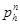
__________
* Основные буквенные обозначения даны в справочном приложении 2.
где r - гидравлический радиус поперечного сечений силоса, определяемый по формуле
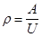
А, U - площадь и периметр поперечного сечения силоса;
l - коэффициент бокового давления сыпучего материала, определяемый по формуле
l = tg2(45° - j/2)
(для зерна допускается принимать l = 0,44);
е - основание натурального логарифма.
Нормативное значение кольцевого горизонтального
давления 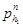
где а1 - коэффициент местного повышения давления, принимаемый согласно требованиям п. 4.11.
4.8. Локальное горизонтальное давление на стены
круглых силосов принимается распределенным по двум площадкам, расположенным с
двух диаметрально противоположных сторон силоса. Размер площадок
устанавливается равным 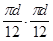
Нормативное значение локального горизонтального
давления 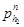
где а2 - коэффициент местного повышения давления, принимаемый согласно требованиям п.4.11.
4.9. Если из силоса диаметром 12 м и более производится пристенный выпуск сыпучего материала с образованием воронки потока сыпучего материала у стены силоса, то следует учитывать понижение горизонтального давления сыпучего материала над выпускным отверстием на всю высоту силоса, при этом схема распределения горизонтального давления принимается по черт. 3.
Черт. 3. Пристенный выпуск зерна
а - разрез силоса; б - план; в - эпюра давления
При внецентренной загрузке или выгрузке силосов диаметром 12 м и более горизонтальное давление следует определять с учетом разного уровня сыпучего материала по периметру его верхнего конуса.
4.10. Горизонтальное давление сыпучих материалов на стены круглых железобетонных силосов и стальных силосов с жесткими ребрами, работающими на изгиб, принимается равным сумме равномерного давления, определяемого по формуле (1), и локального давления, определяемого по формуле (3).
Горизонтальное давление сыпучих материалов на стены стальных круглых листовых силосов, не усиленных ребрами, допускается принимать равномерно распределенным по периметру и равным сумме давлений, определяемых по формулам (1) и (2). При этом разгрузка из силоса основной массы сыпучего материала должна производиться осесимметричным потоком через центральный выпуск.
4.11. Численные значения коэффициентов а1 и а2 в формулах (2) и (3) должны приниматься согласно табл. 1.
Таблица 1
|
Отношение высоты силоса h к его диаметру d |
|||||||
|
10 |
5 |
2,5 |
1,67 |
1,25 |
0,83 |
0,625 |
|
|
а1 |
1,8 |
1,5 |
1,2 |
0,9 |
0,70 |
0,50 |
0,30 |
|
а2 |
1,25 |
1,00 |
0,50 |
0,25 |
0,12 |
0,06 |
0,03 |
Примечание. h - высота от верха силоса до верха воронки или забутки (см. черт. 1).
Для промежуточных отношений h/d значения коэффициентов а1 и а2 допускается определять по интерполяции.
4.12. Полосовое горизонтальное давление на стены квадратных и прямоугольных силосов и на стены звездочек принимается равномерно распределенным по всему периметру стен в любом их месте по высоте.
Нормативное значение полосового давления 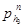
где а3 - коэффициент местного повышения давления сыпучего материала, равномерно распределенного по всему периметру квадратного силоса или звездочки.
Значение коэффициента а3 для квадратных силосов со стороной 3-4 м и для звездочек сблокированных силосов диаметром 6-12 м, высотой h ³ 15 м принимается равным 0,20, при высоте h < 15м - равным 0,1.
Для квадратных силосов со стороной, большей 4 м, значение а3 принимается по опытным данным, но не менее 0,20.
4.13. Изменчивость горизонтальных давлений сыпучих материалов на стены квадратных силосов размером 3´3 м, круглых силосов диаметром 6-12 м и аналогичных многогранных силосов следует учитывать расчетом стен на выносливость с коэффициентом асимметрии цикла rs = 0,85 при стенах с предварительным напряжением и rs = rb = 0,7 для конструкций без предварительного напряжения.
4.14. Нормативное значение вертикального давления
сыпучего материала 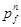
4.15. Вертикальное нормативное давление сыпучих
материалов на днище силоса 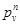
где а4 - коэффициент, принимаемый по рекомендуемому приложению 3.
Значение и распределение избыточного давления воздуха принимаются по данным технологической части проекта.
4.17. Для силосов, в которых нагнетается воздух с образованием кипящего слоя (гомогенизация), нормативное давление на днище и стены в пределах кипящего слоя определяется от сыпучего материала и сжатого воздуха как гидростатическое давление жидкости с удельным весом, равным 0,67g, где g - удельный вес сыпучего материала (см. рекомендуемое приложение 1), при этом следует учитывать повышение уровня сыпучего материала в связи с уменьшением удельного веса в процессе гомогенизации.
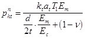
где Т1 - суточная амплитуда температуры наружного воздуха, принимаемая по СНиП II.6.74;
Ет - модуль деформации сжатия сыпучего материала; для зерновых силосов значение Ет допускается принимать по формуле
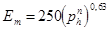
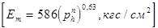
Ес - модуль упругости материала стен силосов; для железобетонных стен с учетом трещин допускается принимать
Ес = 10 000 МПа (100 000 кгс/см2);
kt - коэффициент, принимаемый равным 2 для стальных и монолитных железобетонных стен силосов и равным 1 для сборных железобетонных стен;
аt - коэффициент линейной температурной деформации материала стен;
d - внутренний диаметр силоса;
t - толщина стен;
n - начальный коэффициент поперечных деформаций (коэффициент Пуассона), принимаемый для зерновых продуктов равным 0,4.
Допускается давление 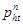
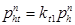
где kt1 - коэффициент, принимаемый равным: 0,4 - для стальных стен силосов; 0,2 - для монолитных железобетонных; 0,15 - для сборных железобетонных при толщине стен менее 15 см и 0,1 - при толщине их 15 см и более.
Значение принимается по формуле (1) в нижней зоне силоса. При определении по формулам (7) и (7а) добавочные усилия от усадки бетона и неравномерного нагрева солнцем не учитываются.
Примечание. Для квадратных силосов в формуле (7) вместо d следует принимать l - расстояние в свету между противоположными стенами.
4.19. Нормативные давления сыпучего материала на наклонную под углом a к горизонту поверхность днищ или воронок силосов определяют по формулам:
нормальное к поверхности воронки или днища
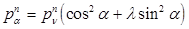
касательное к поверхности воронки или днища
4.20. При выполнении требований п. 3.35 горизонтальное давление на стены круглых и квадратных силосов, из которых зерно выпускается через разгрузочные трубы или смежные силосы и звездочки, определяют с учетом требований пп. 4.5-4.19, умножая коэффициенты а1, а2 и а3 на коэффициент условий работы gс = 0,3, коэффициенты рs и рb - на коэффициент gс = 1,2.
4.21. Нормативное горизонтальное давление сыпучего
материала на внешние стенки разгрузочной трубы 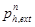
Силы трения, действующие на подвески электротермометров, допускается определять как давление , умноженное на коэффициент трения, данный в рекомендуемом приложении 1.
4.22. Кратковременная часть горизонтального неравномерного давления сыпучих материалов принимается равной 0,7 соответствующих кольцевых, локальных и полосовых давлений, определяемых по формулам (2) - (4); остальная часть неравномерного давления, а также давление, определяемое по формуле (1), принимаются как длительные горизонтальные давления.
4.23. Давление зерна на стены зерноскладов следует определять как давление на подпорные стены.
5. РАСЧЕТ КОНСТРУКЦИЙ
5.1. Несущие конструкции производственных зданий и сооружений предприятий должны соответствовать стандарту СТ СЭВ 384-76. При этом необходимо учитывать нагрузки и их сочетания в соответствии с пп. 4.1-4.3, а также динамическое воздействие на конструкции оборудования.
Примечания: 1. Конструкции помещений с производствами категории Б (перекрытия, включая заполнение монтажных проемов, внутренние стены, перегородки), а также рабочих зданий элеваторов, надсилосных и подсилосных этажей (включая наклонные днища и воронки силосов) следует рассчитывать на прочность от воздействия особой нагрузки по п. 4.1 (примеч. 1), принимаемой равномерно распределенной по всей площади конструкций внутри помещения, при этом все остальные кратковременные нагрузки допускается не учитывать.
2. Наружные легкосбрасываемые конструкции (за исключением оконных стекол и других конструкций, входящих в расчетную площадь 0,03 м2 на 1 м3 объема помещений) допускается проектировать из условий их разрушения или вскрытия при избыточном давлении внутри помещения ра = 2000 Па (200 кгс/м2).
5.2. При расчете сборно-монолитных перекрытий следует учитывать изменения нагрузок и расчетных схем, соответствующие условиям работы конструкций в процессе строительства и после замоноличивания.
СТЕНЫ ЖЕЛЕЗОБЕТОННЫХ СИЛОСОВ
5.3. Стены железобетонных силосов должны удовлетворять требованиям расчетов по несущей способности (расчет на прочность - предельные состояния первой группы) и пригодности к нормальной эксплуатации (расчет с целью исключения образования или чрезмерного раскрытия трещин, для прямоугольных силосов - исключения чрезмерных прогибов - предельные состояния второй группы) согласно СНиП 2.03.01-84.
При расчете стен силосов учитывается основное сочетание нагрузок и воздействий (горизонтальное давление сыпучих материалов на стены силосов по п. 4.5, температурные воздействия по п. 4.18, а также давление воздуха по пп. 4.16 и 4.17, давление ветра на оболочку пустого или заполненного отдельно стоящего силоса диаметром свыше 12 м). Усилия от давления воздуха и температурных воздействий умножают на коэффициент сочетания нагрузок, равный 0,9, от ветра - на коэффициент, равный 0,8.
При расчете конструкций для предельных состояний как первой, так и второй группы должна быть учтена изменчивость нагрузок и воздействий. При этом расчет по несущей способности на выносливость для стен силосов, возводимых в скользящей опалубке (круглых диаметром 12 м и менее и квадратных), производится на основное сочетание расчетных нагрузок с коэффициентом надежности по нагрузке по п. 4.2, для всех остальных силосов - на основное сочетание нагрузок с коэффициентом надежности по нагрузке, равным 1. Коэффициент асимметрии цикла следует принимать согласно п. 4.13.
5.4. Стены силосов, в которых возможно хранение различных сыпучих материалов, следует рассчитывать на максимальное давление, возникающее от этих сыпучих материалов. Допускается все силосы мукомольно-крупяных и комбикормовых предприятии рассчитывать на нагрузку от зерна.
5.5. Усилия в стенах железобетонных силосов от давления сыпучих материалов следует определять с учетом пространственной работы стен силосов. Допускается при расчете усилий в вертикальных сечениях стен круглых сблокированных силосов считать эти силосы отдельно стоящими замкнутыми цилиндрическими оболочками с постоянным сечением стен по контуру оболочки, при этом усилия от загрузки звездочек учитывают отдельно.
Усилия в стенах круглых силосов допускается определять в упругой стадии работы ортотропной цилиндрической оболочки и без учета появления в них трещин.
Сборные элементы силосов следует дополнительно проверять на нагрузки и воздействия, возникающие при их транспортировании и монтаже.
5.6. Расчетную растягивающую продольную силу N и расчетный изгибающий момент М на единицу высоты в вертикальных сечениях стен круглых железобетонных силосов, имеющих по концам шарнирно связанные со стенами, жесткие в горизонтальных плоскостях диафрагмы, от горизонтальных давлений сыпучих материалов, указанных в п. 4.10, в пределах высоты hmt (см. черт. 1) допускается определять по формулам:
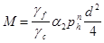
где gf - коэффициент надежности по нагрузке, равный 1,3 при расчете на прочность и образование трещин и равный 1 при расчете по деформациям, раскрытию и закрытию трещин;
gс - коэффициент условий работы, принимаемый равным 1.
Коэффициенты a1 и a2, учитывающие влияние локальных давлений сыпучих материалов, определяют по формулам:
a1 = 0,4а2x1с1; a2 = 0,02а2x2с2,
где x1, x2 - коэффициенты, учитывающие влияние относительной толщины стен и определяемые по формулам:
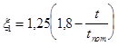
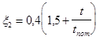
t - толщина стен силоса без ребер или приведенная толщина стен с ребрами (по равенству моментов инерции);
tпот - номинальная толщина стен по табл. 2;
с1 - коэффициент, учитывающий длительность действия давления и принимаемый равным: 1 - при действии полного давления; 0,7 - при действии кратковременной части давления и 0,3 - при действии длительной части давления в соответствии с п. 4.22.
Таблица 2
|
3 |
6 |
12 |
18 |
24 |
|
|
Номинальная толщина стен tпот, см |
16 |
18 |
24 |
27 |
30 |
При коэффициенте с1 = 1 значения a1 и a2 определяют по графикам, приведенным соответственно на черт. 4 и 5.
5.7. Стены круглых железобетонных силосов диаметром 6 и 12 м, имеющих шарнирно связанные со стенами жесткие в горизонтальной плоскости диафрагмы, допускается рассчитывать в зонах на высотах h1, h2 и h3 (см. черт. 1) на центральную растягивающую продольную силу N, определяемую по формуле
где а1 - коэффициент, значение которого в пределах высот h2 и h3 принимается по табл. 1, в пределах высоты h1 - равным 0,5.
Примечание. При h30 м h1 = h2 = h3 = 5 м; при меньших значениях h высоту зон h1, h2 и h3 принимают равной при h/6.
Черт. 4. Значения коэффициента a1
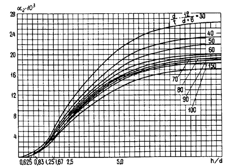
Черт. 5. Значений коэффициента a2
5.8. При расчете стен многогранных силосов (кроме прямоугольных) продольные растягивающие силы определяют по формуле (10) как для круглого силоса диаметром, равным четырем гидравлическим радиусам многогранного силоса. Пролетный и опорный изгибающие моменты в гранях многогранника определяют как суммы моментов, рассчитанных по формулам (11) и (17). В формуле (17) следует принимать = 0 и расстояние l, равное длине внутренней грани многогранника.
5.9. Стены звездочек круглых и многогранных сблокированных силосов следует проверять по прочности на расчетные усилия, возникающие при загрузке звездочки в случае, когда смежные силосы не заполнены (черт. 6, а), а также на сумму усилий, возникающих в стенах звездочки, в случае загрузки звездочки и смежного силоса (черт. 6, б). В этих случаях загрузки допускается не производить расчет стен на образование и раскрытие трещин и не учитывать температурные воздействия на них.
При загрузке звездочки возникающую при этом продольную силу в ее стенах допускается не учитывать, а значение изгибающего момента определять по формуле
где a3 - коэффициент, принимаемый по данным табл. 3 для опорного и пролетного моментов в зависимости от угла y, указанного на черт. 6, в;
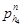
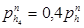
- давление в силосе по формуле (1).
При загрузке звездочки и силоса (см. черт. 6, б) продольную силу и изгибающий момент определяют по формулам:
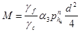
а - загрузка звездочки; б - загрузка звездочки и силоса; в - определение угла y; г - дополнительное армирование стен звездочки: 1 - опорная арматура; 2 - пролетная арматура
Для силосных корпусов со сборными силосами, соединенными между собой в местах касания, коэффициент gс в формуле (13) допускается принимать равным 1,25 для наружных силосов и 2,5 - для внутренних.
5.10. Стены силосов диаметром 12 м и более, загружаемых или разгружаемых внецентренно, следует проверять на усилия, определяемые с учетом разного уровня сыпучего материала по периметру его верхнего конуса.
Если при разгрузке силоса вблизи стен образуется воронка в сыпучем материале с местным снижением горизонтального давления, то следует производить проверку достаточности принятого армирования для восприятия местных усилий в связи со снижением горизонтальных давлений в потоке (см. п. 4.9).
Таблица 3
|
h, м |
Опоры |
Пролеты |
|||||||||||
|
y, град |
|||||||||||||
|
0 |
5 |
10 |
15 |
20 |
22,5 |
0 |
5 |
10 |
15 |
20 |
22,5 |
||
|
6 |
30 |
0,186 |
0,153 |
0,124 |
0,100 |
0,083 |
0,057 |
0,116 |
0,092 |
0,072 |
0,057 |
0,042 |
0,029 |
|
6 12 |
15 30 |
0,150 |
0,125 |
0,100 |
0,080 |
0,066 |
0,057 |
0,093 |
0,075 |
0,060 |
0,045 |
0,035 |
0,029 |
|
12 |
15 |
0,075 |
0,060 |
0,057 |
0,057 |
0,057 |
0,057 |
0,040 |
0,037 |
0,029 |
0,029 |
0,029 |
0,029 |
Примечание. При диаметре силоса 9 м значение коэффициента a3 определяется интерполяцией.
5.11. Расчетную растягивающую продольную силу N и расчетный изгибающий момент М в вертикальных сечениях стен квадратных железобетонных силосов от горизонтальных давлений сыпучего материала следует определять по формулам:
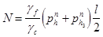
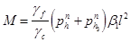
где b1 - коэффициент, равный 1/24 для пролетного изгибающего момента, 1/12 для опорного момента монолитных силосов, для силосных корпусов со сборными силосами - устанавливаемый с учетом жесткости заделки стен, зависящей от конструктивного решении узловых соединений.
5.12. При расчете наружных стен сблокированных или одиночных силосов следует учитывать дополнительные изгибающие моменты Мt, (для квадратных и многогранных силосов) и растягивающие продольные силы Nt от температурных воздействий. Эти усилия допускается определять по формулам:
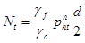
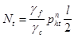
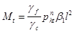
где gf - коэффициент надежности по нагрузке, равный 1,1 при расчете на прочность и равный 1 при расчете по деформациям, раскрытию и закрытию трещин.
Примечание. Для верхних и нижних участков стен круглых силосов, рассчитываемых согласно п. 5.7, температурные воздействия допускается не учитывать.
5.13. При расчете стен прямоугольных силосов прогиб от давления по формуле (1) не должен превышать 1/200 пролета в осях стен.
При разновременном загружении смежных силосов в расчетах по предельным состояниям второй группы значения ширины раскрытия трещин и прогиба, определенные по СНиП 2.03.01-84, следует умножать на коэффициент сvar. Значение сvar принимается равным 1,1 при ss = 200 МПа (2000 кгc/см2) и 1,2 при ss = 270 МПа (2700 кгс/см2).
5.14. При осуществлении мероприятий по снижению
горизонтальных давлений сыпучих материалов в соответствии с п. 3.35
допускается в стенах силосов, из которых зерно выпускается через разгрузочные
трубы или через смежные силосы и звездочки, усилия от горизонтальных давлений сыпучих
материалов определять по формулам (10), (11), (16) и (17), умножая коэффициенты a1, a2 и 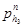
5.15. Дополнительные усилия в стенах силосов от изгиба сблокированных силосов как целого блока следует определять расчетом блока силосов на упругом основании. При соблюдении условий п. 3.23 допускается не учитывать эти дополнительные усилия.
5.16. Коэффициенты условий работы при расчете стен силосов следует определять в соответствии с требованиями СНиП 2.03.01-84, принимая для стен силосов, возводимых в скользящей опалубке, в пределах засыпки сыпучих материалов коэффициент условий работы арматуры gs = 0,9, коэффициент условий работы бетона gb = 0,75. На последний коэффициент следует умножать Rb и Rbt. При gb = 0,75 коэффициент gb2, учитывающий длительность действия нагрузки, принимается равным 1.
5.17. Стены железобетонных силосов, в которых площадь сечения вертикальной арматуры меньше минимальной, указанной в СНиП 2.03.01-84, следует рассчитывать на сжатие как бетонные конструкции с коэффициентом условий работы, приведенным в п. 5.16.
5.18. Расчетная вертикальная продольная сила N от трения сыпучего материала о стену силоса на единицу длины периметра горизонтального поперечного сечения на глубине z от верха засыпки определяется по формуле
При расчете стен силосов на сжатие следует учитывать загрузку смежных силосов.
По формуле (21) допускается определять продольные силы, возникающие в стенах разгрузочных труб и подвесках для электротермометров, с умножением на коэффициент gext = 1,5. Для разгрузочных труб следует также учесть силу трения сыпучего материала внутри трубы.
5.19. При расчете стен силосов на сжатие максимальные напряжения сжатия следует определять в месте опирания стен на плиту днища, на балки или фундаментную плиту.
При расчете на сжатие нижней зоны стен силосов расчетная нагрузка от веса сыпучих материалов умножается на коэффициент, равный 0,9.
5.20. При расчете горизонтальной и вертикальной
арматуры стен железобетонных силосов диаметром свыше 12 м следует учитывать
также ветровую нагрузку, рассчитывая силос как оболочку, при этом радиальные
деформации оболочки силоса при заполненном силосе следует определять с учетом
реакции заполнения. Допускается при этом рассматривать сыпучий материал как линейно-податливое
основание с коэффициентом постели С, который следует определять по
формуле 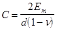
5.21. Стены силосов при h
< 1,5 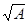
Давление сыпучего материала на стены бункера на глубине z от верха засыпки определяют по формуле
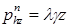
СТЕНЫ СТАЛЬНЫХ СИЛОСОВ
5.22. Стены стальных круглых силосов рассчитывают на те же сочетания нагрузок и воздействий, что и стены железобетонных круглых силосов (см. пп.4.2 и 5.3).
5.23. Стены стальных силосов, воспринимающие изгибающие моменты, рассчитывают на те же усилия, что и стены железобетонных силосов, но с коэффициентом условий работы gс, равным 0,8; дополнительно стены стальных силосов проверяют на устойчивость с коэффициентом gс = 1.
5.24. Расчетную растягивающую кольцевую продольную силу от горизонтальных давлений сыпучих материалов в стенах круглых стальных силосов, не воспринимающих кольцевые изгибающие моменты, допускается определять по формуле
Проверка на прочность и устойчивость от усилий сжатия в горизонтальных сечениях производится в соответствии с указаниями СНиП II-23-81 и с учетом поддерживающего влияния внутреннего давления зерна при коэффициенте gc = 1.
5.25. При высоте стен силоса h < 1,5 следует руководствоваться указаниями п. 5.21, при этом дополнительно стены силоса проверяют на устойчивость с учетом вертикальных сил трения сыпучего материала о стены силоса по формуле (5), в которой вместо принимается , определяемое по формуле (22).
5.26. Места изменения формы силоса, в частности зона сопряжения цилиндрической части с конусной или с плоским днищем, а также места резкого изменения нагрузок должны быть проверены на дополнительные местные напряжения (краевой эффект) по СНиП II-23-81.
ВОРОНКИ И ДНИЩА СИЛОСОВ
5.27. Расчет конических воронок силосов следует производить на горизонтальное кольцевое растяжение и осевое растяжение, действующее вдоль образующей,
Расчетные растягивающие продольные силы в конической воронке - горизонтальную Nh в меридиональном сечении и Nt, действующую вдоль образующей воронки под углом a к горизонту в кольцевом сечении (черт. 7), следует определять по формулам:
где gf1 - коэффициент надежности по нагрузке от собственного веса воронки силоса;
g - собственный вес единицы площади стенки воронки;
G1 - вес части воронки с сыпучим материалом, расположенной ниже плоскости сечения.
Значения коэффициента условий работы gс даны в рекомендуемом приложении 3.
Черт. 7. Расчетные схемы конической воронки
а - обозначение размеров воронки; б - схема для определения горизонтального растягивающего усилия; в - то же, меридионального (вдоль ската)
5.28. Грани пирамидальных воронок следует рассчитывать на местный изгиб (из плоскости грани) от давления, определяемого по формуле (8), совместно с растягивающими продольными силами в вертикальных и горизонтальных сечениях воронки. Горизонтальную растягивающую силу у грани пирамидальной квадратной воронки следует определять по формуле (24), а растягивающую силу вдоль грани пирамидальной квадратной воронки - по формуле (25), при этом вместо dz необходимо принимать ширину в свету грани воронки в рассматриваемом горизонтальном сечении, а вместо величины p следует принимать 4.
5.29. Балки днища необходимо рассчитывать на нагрузки, передающиеся через стены и днища (или воронки) силоса, принимая, что нагрузка от стен силосов q1 передается на балку в виде равномерно распределенной на длине l1 (черт. 8).
Черт. 8. Передача нагрузки от балки на колонну
q1 - нагрузка от стены силоса; q2 - нагрузка от днища (воронки); l1 - расчетная длина опирания стены силоса на балку; h - высота балки; b - ширина оголовка колонн; 1о - расстояние между осями колонн
Нагрузку от днища q2, а также нагрузку от стен силосов при l1 > 1о следует принимать равномерно распределенной по периметру балки.
5.30. При расчете плоских наклонных днищ и балок днищ усилия следует определять как в обычных перекрытиях с учетом давления сыпучих материалов по формулам (8) и (9) и коэффициента условий работы gс, приведенного в рекомендуемом приложении 3.
5.31. Дополнительные усилия в днищах силосов при расчете блока силосов на упругом основании следует определять в соответствии с указаниями пп.5.15 и 5.33.
КОЛОННЫ ПОДСИЛОСНЫХ ЭТАЖЕЙ
5.32. Колонны подсилосного этажа необходимо рассчитывать по схеме стоек, заделанных в фундамент, с учетом фактического закрепления в днище силоса, при этом расчетную длину колонн следует принимать, как правило, не менее высоты колонны от верха подколенника до верха капители.
Максимальный процент содержания арматуры железобетонных колонн, как правило, не должен превышать 3.
5.33. Колонны подсилосного этажа необходимо рассчитывать на максимальные усилия, передающиеся на них при разных схемах загружения силосов (при полной или частичной загрузке силосных корпусов), при этом расчетная нагрузка от веса сыпучих материалов, определяемая в соответствии с пп. 4.2 и 4.4, умножается на коэффициент, равный 0,9.
Усилия в колоннах следует определять расчетом сооружения на упругом основании, при этом для железобетонных силосных корпусов при соблюдении требований п. 3.23 допускается силосную часть считать абсолютно жесткой. При отношении сторон корпуса, равном 2 и более, допускается определять усилия в колоннах как в плоской системе конечной жесткости, выделяя для расчета полосу шириной, равной диаметру или стороне силоса.
5.34. Если колонны подсилосного этажа бетонируют в скользящей опалубке, их следует заводить в стены силосов выше днища на высоту hz определяемую по формуле
, (26)
где N - продольная сила в колонне подсилосного этажа;
А1 - заштрихованная площадь на черт. 9;
Rb - расчетные сопротивления бетона сжатию Rbt и растяжению;
n1 - число стен силосов, примыкающих к колонне.
Допускается hz определять по формуле
, (27)
где lan - длина анкеровки арматуры по СНиП 2.03.01-84.
При расчете по прочности сборных железобетонных колонн подсилосного этажа случайный эксцентриситет, учитываемый согласно требованиям СНиП 2.03.01-84, следует принимать не менее 2,5 см.
Черт. 9. Заделка колонны подсилосного этажа, бетонируемой в скользящей опалубке, в стены силосов
ОСНОВАНИЯ И ФУНДАМЕНТЫ
5.35. Проектирование оснований и фундаментов предприятий по хранению и переработке зерна следует осуществлять в соответствии со СНиП 2.02.01-83 и с учетом требований настоящего раздела.
5.36. Глубину заложения фундаментов в виде сплошных плит от отметки чистого пола подсилосного этажа следует назначать равной не менее половины расчетной глубины промерзания.
5.37. При расчете монолитных плит силосных корпусов, загружаемых сыпучими материалами не ранее чем через 3 мес. после окончания бетонирования плит, класс бетона следует назначать с учетом сроков загрузки.
5.38. При расчете оснований силосных корпусов и рабочих зданий элеваторов по деформациям следует, как правило, использовать расчетную схему в виде линейно деформируемого полупространства. Использование расчетной схемы в виде линейно деформируемого слоя для указанных зданий и сооружений допускается при соответствующем обосновании.
5.39. При расчете оснований и фундаментов силосных корпусов расчетный вес сыпучего материала следует принимать с дополнительным понижающим коэффициентом, равным 0,9.
5.40. Давление на грунт под подошвой фундаментных плит силосных корпусов с круглыми силосами диаметром 3-12 м и квадратными силосами 3´3 м допускается определять с учетом распределения давлений по прямолинейной эпюре при односторонней загрузке корпуса на 2/3 полной нагрузки.
5.41. Предельные значения средних осадок и кренов, указанные в СНиП 2.02.01-83, могут быть увеличены при соответствующем обосновании.
Для силосных корпусов с несколькими подсилосными этажами крен фундаментных плит должен быть не более 0,002, средняя осадка - не превышать 16 см.
Для стальных отдельно стоящих силосов относительная разность осадок должна быть не более 0,004, средняя осадка - не превышать 15 см.
5.42. Осадки отдельно стоящих фундаментов под колонны силосных корпусов допускается принимать для каждого фундамента как сумму осадок фундамента в пределах верхней части сжимаемой толщи и осадок условной сплошной плиты для остальной части этой толщи.
5.43. При определении крена фундаментов силосных корпусов от временной нагрузки следует учитывать предварительное обжатие грунта равномерной первичной загрузкой длительностью не менее 2 мес. в соответствии с п. 3.36. При этом модуль деформации грунта Е¢mt следует принимать равным:
Етt = keEmt, (28)
где Еmt - средний в пределах сжимаемой толщи модуль деформации грунта;
kе - коэффициент повышения модуля деформации грунта, принимаемый равным: для песчаных грунтов - 1,5; для пылевато-глинистых грунтов с показателем текучести IL £ 0,25 - 1,3; для пылевато-глинистых грунтов с показателем текучести 0,25 < IL £ 0,5 - 1,2; для грунтов других видов - 1,0.
СКЛАДЫ
5.44. Несущие каменные стены и фундаменты зерноскладов, на которые передается давление зерновых продуктов, следует рассчитывать как подпорные стены.
5.45. Участки стен зерноскладов, примыкающие к воротам, необходимо рассчитывать на давление зерновых продуктов, передаваемое через щиты, временно заложенные в проемы ворот.
5.46. Фундаменты зерноскладов, на которые передается горизонтальное давление зерновых продуктов, следует проверять на устойчивость от сдвига.
5.47. Плиты перекрытий складов тарных грузов необходимо проверять на усилия, возникающие от колес аккумуляторных погрузчиков.
6. ИНЖЕНЕРНОЕ ОБОРУДОВАНИЕ
ВОДОСНАБЖЕНИЕ
6.1. Проектирование водоснабжения и внутреннего водопровода предприятий следует осуществлять в соответствии со СНиП 2.04.02-84 и СНиП II-30-76 и с учетом требований настоящего раздела.
6.2. Систему водоснабжения на предприятиях по надежности подачи воды следует принимать, как правило, второй категории.
При устройстве противопожарного водоснабжения из водоемов или резервуаров допускается систему водоснабжения принимать третьей категории.
6.3. Качество воды для технологических нужд зерноперерабатывающих предприятий должно удовлетворять ГОСТ 2874-82.
6.4. Расход воды на производственные нужды предприятий мукомольно-крупяной и комбикормовой промышленности следует принимать в соответствии с технологическим заданием и нормами технологического проектирования. Коэффициент часовой неравномерности для технологических расходов следует принимать равным 1.
6.5. Расчетный расход воды на наружное пожаротушение предприятий необходимо определять в соответствии со СНиП 2.04.02-84 в зависимости от категории производств по пожарной опасности, объема зданий или сооружений и их огнестойкости. При этом для элеваторов расчетный расход воды следует определять по наибольшему строительному объему рабочего здания или одного силосного корпуса, расположенного в ряду корпусов, или отдельно стоящего силоса, но не менее 20 л/с.
6.6. Расчетный расход воды на наружное пожаротушение групп зерноскладов, разделенных противопожарными стенами, следует определять по табл. 4.
Таблица 4
|
Вместимость группы зерноскладов, тыс. т (тыс. м3) , при расходе воды на один пожар, л/с |
|||
|
10 |
15 |
20 |
|
|
II |
До 50 (до 135,5) |
Св. 50 (св. 135,5) |
- |
|
III |
До 25 (до 68,0) |
Св. 25 (св. 68,0) |
- |
|
IV, V |
До 15 (до 36,5) |
От 15 до 25 (от 36,5 до 60) |
Св. 25 (св. 60,0) |
6.7. На предприятиях возможно устройство самостоятельного противопожарного водопровода, когда объединение его с хозяйственно-питьевым и производственным водопроводами не допускается по СНиП 2.04.02-84.
Для предприятий с территорией не более 10 га и категориями производств В, Г и Д при расходе воды на наружное пожаротушение до 20 л/с и отсутствии внутреннего противопожарного водопровода в производственных зданиях и при наличии на объекте пожарного поста с пожарной автомашиной допускается устройство противопожарного водоснабжения из водоемов или резервуаров с обеспечением подъезда к ним автонасосов.
6.8. Максимальный срок восстановления неприкосновенного противопожарного и аварийного запасов воды в резервуарах или водоемах должен быть не более 72 ч.
6.9. Насосные станции противопожарных и объединенных противопожарно-производственно-хозяйственного водопроводов относятся по надежности действия к 1-й категории, производственно-хозяйственных - ко 2-й категории, хозяйственных - к 3-й категории.
6.10. Для тушения пожара рабочего здания элеватора высотой свыше 50 м от гидрантов с помощью насосов высоту компактной струи на уровне наивысшей точки следует принимать не менее 10 м при расчетном расходе воды 5 л/с.
6.11. Устройство внутреннего противопожарного водопровода в неотапливаемых зданиях и сооружениях элеваторов, зерноскладов, корпусах сырья и готовой продукции предусматривать не следует.
Отапливаемые производственные помещения, расположенные в неотапливаемом здании, необходимо оборудовать противопожарным водопроводом в зависимости от их объема в соответствии со СНиП II-30-76.
6.12. Для пожаротушения рабочего здания элеватора, подачи на его крышу и крышу примыкающего силосного корпуса одной пожарной струи с расходом 5 л/с в лестничной клетке следует устанавливать сухотруб диаметром 85 мм с соединительными головками диаметром 66 мм, расположенными снизу сухотруба с наружной стороны здания выше уровня планировки и сверху на крыше, а также с пожарными кранами диаметром 65 мм на всех этажах лестничной клетки. При этом сухотруб необходимо соединить с наружной противопожарно-хозяйственной водопроводной сетью, если пожаротушение осуществляется от пожарных насосов насосной станции.
6.13. Автоматическое пожаротушение следует предусматривать для зданий и сооружений в соответствии с перечнем, утвержденным Минзагом СССР.
6.14. При проектировании внутренних водопроводных сетей холодной воды, прокладываемых в помещениях для хранения и переработки зерна, следует предусматривать термоизоляцию трубопроводов из несгораемых материалов по расчету на невыпадение конденсата.
КАНАЛИЗАЦИЯ
6.15. На предприятиях следует предусматривать бытовую и производственную канализацию в соответствии со СНиП 2.04.03.85.
6.16. Объединение сетей внутренней бытовой и производственной канализации в зданиях зерноперерабатывающих предприятий не допускается.
6.17. Состав производственных сточных вод мельниц следует принимать по технологической части проекта.
6.18. Прокладка горизонтальных трубопроводов бытовой канализации в помещениях для производства и хранения муки, крупы и комбикормов не допускается.
6.19. Локальную очистку производственных сточных вод до сброса их в бытовую канализацию на зерноперерабатывающих предприятиях следует предусматривать в зависимости от технологической схемы.
6.20. Дождевую канализацию на предприятиях необходимо предусматривать в соответствии со СНиП 2.04.03-85.
6.21. При наличии на площадке системы закрытой дождевой канализации следует, как правило, предусматривать сброс в нее переливных и спускных вод из поддонов оросительных секций кондиционеров, градирен оборотной системы охлаждения вальцевых станков.
ОТОПЛЕНИЕ И ВЕНТИЛЯЦИЯ
6.22. Проектирование отопления, вентиляции и кондиционирования воздуха производственных зданий и сооружений предприятий, а также выбросов вентиляционного воздуха в атмосферу следует производить в соответствии со СНиП II-33-75 и с учетом требований настоящего раздела.
6.23. Расчетные параметры воздуха в помещениях предприятий следует принимать с учетом норм технологического проектирования и других нормативных документов и стандартов.
6.24. В производственных зданиях следует предусматривать, как правило, устройство воздушного отопления, совмещенного с приточной вентиляцией в производственных помещениях, и центрального водяного отопления во вспомогательных помещениях.
6.25. В качестве теплоносителя в системе отопления и вентиляции предприятий, как правило, следует применять горячую воду. Допускается при экономическом обосновании применять пар.
6.26. Не следует предусматривать отопление рабочих зданий элеватора и силосных корпусов, складов сырья и готовой продукции, зерноскладов.
6.27. Температуру теплоносителя в системах отопления с местными нагревательными приборами и теплоснабжения вентиляционных установок следует принимать не более 110 °С.
6.28. Для обогревания рабочих в помещениях (кабинах), расположенных на верхних этажах рабочих зданий элеваторов, допускается предусматривать электрическое отопление с помощью стационарно установленных электропечей мощностью до 1 кВт заводского изготовления в закрытом металлическом кожухе.
6.29. Очистку наружного приточного воздуха от пыли следует предусматривать (в соответствии с требованиями технологии) в помещениях зерноочистительных, размольных, выбойных (упаковочных), шелушильных цехов (отделении) и комбикормовых цехов.
6.30. В помещениях электрощитов при необходимости следует предусматривать механическую приточную и вытяжную вентиляцию, рассчитанную на удаление теплоизбытков.
6.31. Приточный воздух, подаваемый в помещения электрощитов и диспетчерской, должен очищаться в воздушных фильтрах. Вентиляционные камеры должны быть герметичными и иметь доступ для обслуживания фильтров.
Допускается предусматривать рециркуляцию воздуха в помещениях электрощитов в холодный и переходный периоды года.
6.32. В проходных тоннелях элеваторов и зерноскладов следует предусматривать вытяжную вентиляцию с однократным воздухообменом.
6.33. Необходимо предусматривать использование тепла конденсата от технологических потребителей пара для приготовления воды на технологические и бытовые нужды.
7. ЭЛЕКТРОСНАБЖЕНИЕ И ЭЛЕКТРОТЕХНИЧЕСКИЕ УСТРОЙСТВА
7.1. Электроприемники всех предприятий по надежности электроснабжения, как правило, следует относить ко второй категории.
Категория электроснабжения объектов, имеющих насосные станции, должна быть не ниже категории их надежности, при этом один из источников питания допускается принимать мощностью, удовлетворяющей потребности только насосной станции, с учетом требований СНиП 2.04.02-84.
7.2. Электрические установки зданий и сооружений следует проектировать с учетом условий окружающей среды и классификации помещений и электроустановок по взрывоопасности, пожароопасности и опасности поражения людей электрическим током в соответствии с требованиями Правил устройства электроустановок (ПУЭ-76), утвержденных Минэнерго СССР, а также норм технологического проектирования, утвержденных Минзагом СССР.
7.3. Расчетные коэффициент спроса, коэффициент мощности и годовое число часов использования максимума силовых и осветительных электрических нагрузок следует принимать в соответствии с табл. 5.
Таблица 5
|
Предприятия, здания, помещения (цехи или отделения) и оборудование |
Коэффициенты |
Годовое число часов использования максимума электрических силовых нагрузок |
||
|
спроса |
мощности |
|||
|
Предприятия по производству муки: |
||||
|
сортового помола |
0,7-0,75 |
0,8 |
7200 |
|
|
обойного помола |
0,78-0,8 |
0,8 |
7200 |
|
|
Предприятия по производству крупы |
0,65-0,7 |
0,8 |
7200 |
|
|
Предприятия по производству комбикормов |
0,55-0,65 |
0,8 |
7200 |
|
|
Цехи отходов |
0,5-0,4 |
0,75 |
3000 |
|
|
Склады готовой продукции |
0,4-0,5 |
0,75 |
5000 |
|
|
Зарядные станции |
0,7-0,75 |
0,8 |
3000-3500 |
|
|
Элеваторы |
0,45-0,75 |
0,75 |
5000 |
|
|
Вентиляция сантехническая |
0,7 |
0,8 |
4000-5000 |
|
|
Воздушные компрессорные станции |
0,7-0,8 |
0,8 |
6000 |
|
|
Ремонтно-механические мастерские |
0,25 |
0,75 |
3000 |
|
|
Склады механизированные |
0,4-0,5 |
0,75 |
2000 |
|
|
Котельные и насосные (кроме пожарных насосов) |
0,5-0,6 |
0,75 |
2000 |
|
|
Примечания: 1. При наличии данных расчеты следует выполнять по методу коэффициентов использования и максимума. 2. Коэффициенты спроса приведены для расчетов потребной мощности на шинах 0,4 кВ трансформаторных подстанций. |
||||
7.4. При проектировании искусственного освещения зданий и сооружений следует предусматривать:
разряды зрительных работ и освещенность помещений - согласно табл. 6;
для производственных помещений мельниц, крупозаводов и диспетчерских помещений, как правило, светильники с люминесцентными лампами;
для комбикормовых заводов и других зданий и помещений, как правило, светильники с лампами накаливания (допускается применение ламп ДРП);
для ремонтного освещения - переносные светильники, установку штепсельных разъемов и специальную сеть напряжением до 36 В, подключенную к стационарным понизительным трансформаторам. Допускается для этих целей применение аккумуляторных фонарей.
Таблица 6
|
Разряд зрительной работы |
Освещенность, лк, при лампах |
||
|
накаливания |
газоразрядных |
||
|
Элеваторы |
|||
|
Этажи головок норий, этажи сепараторов |
VIIIа |
30 |
75 |
|
Весовой этаж |
VI |
50 |
100 |
|
Остальные этажи рабочего здания, надсилосный и подсилосный этажи, приемные устройства, галереи, сушилка |
VIIIб |
20 |
50 |
|
Цех отходов |
VIIIб |
20 |
50 |
|
Мельницы и крупозаводы |
|||
|
Выбойные отделения |
VI |
50 |
100 |
|
Помещения расфасовочных автоматов в мелкую тару |
Vа |
150 |
200 |
|
Остальные помещения размольных, рушальных и зерноочистительных отделений |
VI |
100 |
150 |
|
Помещения для починки мешков |
V6 |
100 |
150 |
|
Корпуса готовой продукции |
VIII6 |
20 |
50 |
|
Комбикормовые заводы |
|||
|
Этажи головок весов многокомпонентных дозаторов |
Vа |
100 |
200 |
|
Остальные этажи производственных корпусов |
VIIIа |
30 |
75 |
|
Корпуса сырья и готовой продукции |
VIIIб |
20 |
50 |
|
Авто- и железнодорожные весы |
Vа |
100 |
200 |
|
Механизированные склады зерна |
VIIIв |
20 |
- |
|
Примечания: 1. Поверхность, для которой нормируется освещенность в производственных помещениях, - 0,8 м от уровня пола. 2. Коэффициент запаса К3 принимается при искусственном освещении и лампах накаливания для производственных помещений 1,5, для остальных - 1,3, при газоразрядных лампах - соответственно 2,0 и 1,5. 3. При применении промышленного телевидения освещенность должна приниматься 100-150 лк. |
|||
ПРИЛОЖЕНИЕ
1
Рекомендуемое
ОСНОВНЫЕ ХАРАКТЕРИСТИКИ СЫПУЧИХ МАТЕРИАЛОВ
|
Сыпучие материалы |
Удельный вес g, кгс/ м3 |
Угол естественного откоса (угол внутреннего трения) j, град |
Коэффициент трения f |
|
|
по бетону |
по металлу |
|||
|
Зерно (пшеница, рожь, ячмень, овес, кукуруза в зерне и т.д.), бобовые семена, крупа, зерновое сырье комбикормовых заводов, гранулированные комбикорма и отруби |
800 |
25 |
0,4 |
0,4 |
|
Комбикорма всех видов (кроме гранулированных), семена подсолнуха и трав |
550 |
40 |
0,4 |
0,4 |
|
Кукуруза в початках |
450 |
30 |
0,4 |
0,4 |
|
Мука (пшеничная, ржаная и др.) и мучнистые продукты при высоте силоса, м: |
||||
|
до 15 |
650 |
25 |
0,6 |
0,5 |
|
св. 15 |
700 |
40 |
0,3 |
0,3 |
|
Отруби (кроме гранулированных) при высоте силоса, м: |
||||
|
до 15 |
400 |
35 |
0,7 |
0,6 |
|
св. 15 |
450 |
40 |
0,3 |
0,3 |
ПРИЛОЖЕНИЕ 2
Справочное
ОСНОВНЫЕ БУКВЕННЫЕ ОБОЗНАЧЕНИЯ
ГЕОМЕТРИЧЕСКИЕ ХАРАКТЕРИСТИКИ
h; h1; h2; h3; hmt - высота стен силосов, участков зон стен силосов;
z - расстояние от верха засыпки;
d - внутренний диаметр круглого силоса;
l - расстояние в свету между противоположными стенами прямоугольных силосов;
l0 - расстояние между осями колонн;
t - толщина стены;
А, U - площадь и периметр поперечного сечения силоса;
r - гидравлический радиус поперечного сечения силоса, определяемый по формуле .
ДАВЛЕНИЕ СЫПУЧИХ МАТЕРИАЛОВ
- равномерно распределенное нормативное давление сыпучего материала соответственно горизонтальное на стены силоса, вертикальное на днище силоса;
- кольцевое горизонтальное нормативное давление сыпучего материала на стены круглых силосов;
- локальное нормативное горизонтальное давление сыпучего материала на стены круглых силосов;
- полосовое нормативное горизонтальное давление сыпучего материала на стены квадратных, прямоугольных силосов и звездочек;
- нормативное горизонтальное давление сыпучего материала от температурных воздействий;
- нормативное давление сыпучего материала на наклонную поверхность днища, нормальное и касательное к поверхности днища:
- нормативное горизонтальное давление сыпучего материала на стены бункера.
ХАРАКТЕРИСТИКИ СЫПУЧИХ И ДРУГИХ МАТЕРИАЛОВ, КОЭФФИЦИЕНТЫ ДЛЯ ОПРЕДЕЛЕНИЯ НАГРУЗОК
g; j; ¦ - удельный вес, угол внутреннего трения, коэффициент трения сыпучего материала о стены силосов;
l - коэффициент бокового давления сыпучего материала, определяемый по формуле ; для зерна допускается принимать l = 0,44;
n - начальный коэффициент поперечной деформации (коэффициент Пуассона), принимаемый для зерновых продуктов равным 0,4;
Ет - модуль деформации сжатия сыпучего материала;
а1; а2; а3; а4 - коэффициенты местного повышения давления сыпучих материалов;
gext - коэффициент повышения давления на разгрузочную трубу;
rs; rb - коэффициенты асимметрии цикла для арматуры и бетона;
Rb,Rs - расчетные сопротивления бетона и арматуры.
УСИЛИЯ ОТ ВНЕШНИХ НАГРУЗОК И ВОЗДЕЙСТВИЙ
N - продольная сила сжатия или растяжения;
М - изгибающий момент.
КОЭФФИЦИЕНТЫ ДЛЯ ОПРЕДЕЛЕНИЯ УСИЛИЙ
g¦ - коэффициент надежности по нагрузке, равный: 1,3 - для локальных давлений сыпучих материалов и 1,1 - для температурных воздействий при расчете по прочности и образованию трещин; 1 - при расчете по деформациям и по раскрытию и закрытию трещин;
gс - коэффициент условий работы;
a1; a2 - коэффициенты, учитывающие влияние локальных давлений сыпучих материалов;
b1 - коэффициент, учитывающий влияние расчетной схемы на величину изгибающих моментов.
ПРИЛОЖЕНИЕ
3
Рекомендуемое
ЗНАЧЕНИЯ КОЭФФИЦИЕНТОВ ПОВЫШЕНИЯ ДАВЛЕНИЯ а4, И УСЛОВИЙ РАБОТЫ gc, КОТОРЫЕ СЛЕДУЕТ ПРИНИМАТЬ В РАСЧЕТАХ КОНСТРУКЦИЙ ПЛИТЫ ДНИЩА, БАЛОК И ВОРОНКИ СИЛОСА
|
Вид конструкции |
а4 |
gс |
|
Железобетонная плита днища без забутки и с забуткой, балки днища, а также железобетонная воронка в силосе: |
||
|
для всех видов зерна и гранулированных продуктов |
1 |
1 |
|
для муки и отрубей |
1,5 |
1,2 |
|
Стальная воронка и стальные балки днища в железобетонном и стальном силосах: |
||
|
для всех видов зерна и гранулированных продуктов |
1 |
0,8 |
|
для муки и отрубей |
1,5 |
1,0 |
СОДЕРЖАНИЕ